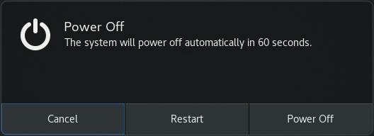

Ctrl+Alt+Backspace快捷键组合用于终止X.Org显示服务器。
您可能希望终止X.Org，尤其是在以下情况下：
要使Ctrl+Alt+Backspace快捷方式默认为所有用户强制终止X.Org ，您需要设置org.gnome.desktop.input-sources.xkb-options GSettings键。
在/etc/dconf/db/local.d/00-input-sources为机器范围的设置创建本地数据库：
[org/gnome/desktop/input-sources] # Enable Ctrl-Alt-Backspace for all users xkb-options=['terminate:ctrl_alt_bksp']
覆盖用户的设置，并阻止用户在/etc/dconf/db/local.d/locks/input-sources更改它：
# Lock the list of enabled XKB options /org/gnome/desktop/input-sources/xkb-options
更新系统数据库以使更改生效：
# dconf update
如果启用了Ctrl+Alt+Backspace组合键，则所有用户都可以终止X.Org ，这会将它们带回登录提示。
要禁用桌面用户的命令行访问，您需要在许多不同的上下文中进行配置更改：
Applications menu和“GNOME Shell”中的“ Activities Overview中删除终端和任何其他提供终端访问权限的Applications menu程序。这是通过删除这些应用程序的菜单项来完成的。
以下步骤不会删除桌面用户访问命令行的权限，而是删除桌面用户可以访问命令行的方式。
此方法可防止用户：
Alt+F2命令提示符指定要执行的命令行在/etc/dconf/db/local.d/00-lockdown为机器范围的设置创建本地数据库：
[org/gnome/desktop/lockdown] # Disable command-line access disable-command-line=true
覆盖用户的设置并阻止用户在/etc/dconf/db/local.d/locks/lockdown更改它：
# Lock the disabled command-line access /org/gnome/desktop/lockdown
更新系统数据库：
# dconf update
使用X.Org显示服务器，用户通常可以使用Ctrl+Alt+function键快捷方式从GNOME桌面和X.Org切换到虚拟终端。您可以通过修改X.Org配置来禁用对所有虚拟终端的访问。应通过将DontVTSwitch选项添加到/etc/X11/xorg.conf.d/目录中X配置文件的Serverflags部分来修改X.Org配置，如以下过程所示。
如果将Wayland上的GNOME Shell用作显示服务器，则无法应用此过程。
在/etc/X11/xorg.conf.d/目录中创建或编辑X配置文件：
按照惯例，这些特定于主机的配置文件名以两位数和一个连字符开头，并且始终具有.conf扩展名。因此，以下文件名可以是/etc/X11/xorg.conf.d/10-xorg.conf 。
Section "Serverflags" Option "DontVTSwitch" "yes" EndSection
关闭笔记本电脑的盖子时，默认情况下计算机会暂停以节省电量。您可以通过更改该行为的设置来阻止计算机在关闭盖子时暂停。
如果一些笔记本电脑在盖子关闭的情况下继续运行，它们可能会过热，特别是如果它们位于狭窄的地方。因此，请考虑在您的情况下，将默认设置从suspend更改为其他选项是否有益。
/etc/systemd/logind.conf文件进行编辑。
在文件中找到HandleLidSwitch=suspend行。
如果在开头用#字符引用它，则通过删除#取消引用它。
如果文件中不存在该行，请添加该行。
将默认suspend参数替换为：
lock屏幕锁定ignore什么都不会发生
poweroff为计算机关掉
例如：
[Login] HandleLidSwitch=lock
运行以下命令，以便您的更改保留下次重新启动系统：
# systemctl restart systemd-logind.service
重新启动服务会强制中断任何登录的桌面用户当前正在运行的GNOME会话。这可能导致用户丢失未保存的数据。
有关/etc/systemd/logind.conf文件的更多信息，请参见logind.conf手册页。
当机器启动到图形登录屏幕或用户会话时，按下power按钮会使机器默认挂起。当用户物理按下power按钮或从远程控制台按下虚拟power按钮时，会发生这种情况。要在按下power按钮时实现不同的行为，请使用dconf设置此按钮的功能。
例如，如果要在按下power按钮后关闭系统，请使用以下过程：
在/etc/dconf/db/local.d/01-power文件中为系统范围的设置创建本地数据库：
[org/gnome/settings-daemon/plugins/power] power-button-action='interactive'
覆盖用户的设置，并阻止用户在/etc/dconf/db/local.d/locks/01-power文件中更改它：
/org/gnome/settings-daemon/plugins/power/power-button-action
更新系统数据库：
# dconf update
按下power按钮后，此配置将启动系统关闭。要以不同方式配置系统，您可以设置特定按钮的行为。
特定按钮的选项：
没有
什么也没做
暂停
暂停系统
过冬
冬眠系统
互动
显示弹出查询，询问用户该做什么
使用交互模式，系统在按下电源按钮60秒后自动关机。但是，您可以从弹出查询中选择不同的行为，如下图所示。
